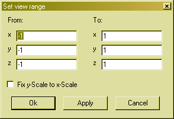

Set the view range

In this dialog you can set the displayed range in the plotting area. You can enter boundary values for the x, y and z axis.
If you check the Fix y-Scale to x-Scale checkbox the y-range is always calculated from the x-range and the window size, so that the x-scale and the y-scale are the same.
Note that the "From" values on the left must be smaller than the "To" values on the right.